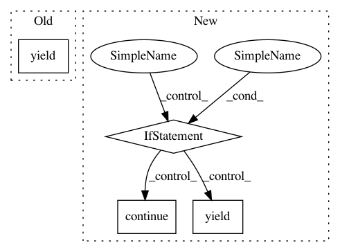

d78331c9f66c47abeb806f2e409cdb442b2c02be,python/seldon_core/metrics.py,SeldonMetrics,collect,#SeldonMetrics#,54
Before Change
[str(worker), labels["model"], labels["image"]], item_value
)
yield metric
METRICS_MAP = {
"COUNTER": CounterMetricFamily,
After Change
yield expose_gauge(item_name, item_value, labels)
elif item_type == "COUNTER":
yield expose_counter(item_name, item_value, labels)
elif item_type == "TIMER":
yield expose_histogram(item_name, item_value, labels)
else:
continue
def create_counter(key: str, value: float):
In pattern: SUPERPATTERN
Frequency: 3
Non-data size: 4
Instances
Project Name: SeldonIO/seldon-core
Commit Name: d78331c9f66c47abeb806f2e409cdb442b2c02be
Time: 2020-03-23
Author: r.j.skolasinski@gmail.com
File Name: python/seldon_core/metrics.py
Class Name: SeldonMetrics
Method Name: collect
Project Name: etal/cnvkit
Commit Name: b9bb04d10ebefde21de83ae30e63821bf719220f
Time: 2016-05-19
Author: eric.talevich@gmail.com
File Name: cnvlib/reports.py
Class Name:
Method Name: group_by_genes
Project Name: scipy/scipy
Commit Name: 194b6ab23d80aedd3c3e059f0a98138298c21bcb
Time: 2010-06-01
Author: oliphant@enthought.com
File Name: scipy/stats/tests/test_continuous_basic.py
Class Name:
Method Name: test_cont_basic